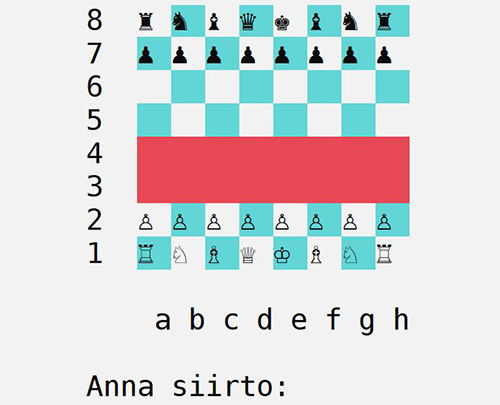

While my game development journey is still young, I’ve worked on these projects that I’m excited to share with you.
Dark Hike
Dark Hike was a student project collaboration that included both programming and artist students. The original idea was to mix the atmosphere of Dark Souls with the gameplay of A Short Hike. The game tells a story of a knight waking up in the Plane between life and death. How well we succeeded is for you to decide. The playable demo was published in itch.io.
These are the lessons learnt with this one:
- Programming: Using Unreal Engine and C++
- Project Management: Working with a large team of 14
- Game Desing: A lack of a solid vision led to clashes
This was my first project using Unreal Engine, so quite the chunk of the time went to getting to know the engine and its best practices. None of the programmers had used Unreal previously in a proper project, so we started basically from scratch.
We had a large team of 14 people: 3 programmers, 9 artists, 2 sound designers and a marketing student acting as a project manager. Despite the team was huge, we managed to work quite efficiently. There was some friction between different disciplines, as expected with any large team, but we managed to navigate those situations well and worked together harmoniously. The biggest challenges, however, came with the game design.
Our problem with the game design was that it was not coherent and some design decisions didn't work well together. We didn't fully grasp the big picture. Originally, the plan was to have as few game mechanics as possible, focusing mainly on walking, but luckily we managed to push through changes that gave the game at least some interesting elements. Several awesome ideas for game design and art were scrapped, and with those ideas there could've been a chance for a truly unique game.
Overall, I'm quite happy with the result of the project, although I'm not entirely satisfied with some of the game design decisions. However, in my humble opinion, it looks amazing!
Check out the Github repo and gameplay video on YouTube by clicking the icons below. The prototype is also available for download in itch.io.
ChompTown
Chomptown is our team'sentry for the Global Game Jam 2024. The theme for the game jam was "Make Me Laugh". The game is a 3D action game in which you play as an escaped crocodile that has to eat the villagers of a mountain town so you won't starve to death.
Not only having the 48-hour deadline of Global Game Jam was a challenge, but also having a team of 12 in this kind of rapid game development. Here are what I did in the project:
- Project Management: Coordinating a team of 12 in a 48-hour game jam
- Game Desing: Designing systems and ensuring coherence in the game design
- Programming: Implementing fun physics-based features
- Game Audio: Creating humorous sound effects using only the human mouth
The goal of this project was just to have fun with old and new friends and do some funny stuff with the game jam theme. And I think that's exactly what we did. The only troubles we had were synchronizing the team of 12 people and having a game up and running in just 48 hours. Otherwise, we had just great time messing around with ideas.
The game design in this project was quite evenly distributed among the devs, but I took care that the point system, including eating and gauge systems, were balanced. My second responsibility was to make the physics-based features, such as destruction of the houses, fun and pleasant for the player. I think we succeeded in that aspect, although performance could have been optimized with better choices for the house components.
My third responsibility was to make the sounds for the game. We decided to include a diversifier "Mouthing off" that challenged the devs to make all the sounds for the game with only human mouth and which suited well for humorous tone of the game. I ended up doing all the sound effects myself, but we didn't have time to compose a background music track, so it had to be outsourced.
It didn't come out as polished as I would've liked, but it turned out great. We even went on to showcase the game in the IGDA Helsinki meetup in February 2024, where it received a positive reception!
Check out the Github repo and gameplay video on YouTube by clicking the icons below. The prototype is also available for download in itch.io.
Escape from Caduceus
Escape from Caduceus is a VR puzzle demo that I created for a course assignment for my VR/AR/Console Development course.
This was my first experience with VR and proper 3D development.
Here are some of the lessons learnt with this project:
- Level Desing: Making design decisions that work in both 3D and VR
- Programming: Creating solutions that worked seamlessly in both 3D and VR
As Escape from Caduceus was my first take on both 3D and VR development, I learned a lot with this project about designing and programming a 3D and VR game. The third dimension didn't cause as much of a headache as I had thought, but VR development was a completely different world. The game was set in a zero-gravity space environment, so I had to consider properties that might cause motion sickness to the player. And I think I handled that aspect well. Overall, movement in a VR game needs to be carefully designed to avoid disrupting the player's immersion.
The look and feel of the game were probably the most challenging aspects. The lighting and rendering are crucial, so their quality of implementation must be high. I still have much to learn in this area, but I’m happy with the results. The final product wasn’t perfect, but I could stand behind it.
Even though the design aspect was quite demanding, it was also the most enjoyable part in the project. Working with the unique features VR offers was exciting.
Check out the Github repo and gameplay video on YouTube by clicking the icons below.
UpRooted

Uprooted is our team's entry for the Global Game Jam 2023. The theme for this game jam was "Roots". The game is a 2D puzzle-platformer about a girl raised by trees in a magical grove. The stroy begins when the girl is forced to leave the grove and seek human civilization.
This project had different challenges compared to previous projects: working with new acquaintances in a 48-hour deadline. Here are what I did in the project:
- Programming: Learning new best practices for coding in Unity
- Project Management: Making the team to keep their eye on the ball and keeping the game design desicions inside the scope
- Game Audio: Composing chiptune background music and creating fun sound effects
- Game Desing: Some level design
The Global Game Jam 2023 was a great experience, although also a wearing one. It was great to have a team that worked hard towards a shared goal. I did my part of the gameplay programming and got some awesome tips for best practices from a more experienced teammate. I also did the implementation of the dialogue system of the game. I continued to test my skills as a chiptune composer and making sound effects. The most difficult part was to keep all of the game design decisions inside the project scope. The team had some awesome ideas, but given the time frame, I usually had to be the party pooper and shoot down the most high-flying ones. Making new friends and a game that I can be proud of was definitely worth the time.
The project taught me what kind of game design decisions take more time to implement (e.g. more animation takes a lot more time). I learnt new best practices to code and to make a game in a team of new acquaintances.
You can check out the Global Game Jam page of the game in here. Check out also the Github repo and the gameplay video on YouTube by clicking the icons below.
Ilion Husk's Adventures in Outer Space
Ilion Husk's Adventures in Outer Space was the first school game project that was used to introduce the students to Unity. I was part of a team of four students and we made the game in three weeks studying the game engine at the same time. We set our goal to have a working game with at least two levels. And two levels we scraped together. A great success!
My main responsibilities included Project Management, Game Design, Graphics, and programming narrative and graphical solutions.
So here's what I did in depth:
- Project Management: Managed a team of four, ensuring we stayed on schedule and had everything we needed
- Game Design: Had full creative control over the storyline
- Programming: Using C# in Unity - was responsible for programming narrative and graphical assets as well as helping with other code when needed
- Graphics: Created cutscenes, enemy sprites, and enemy animations
- Scheduling: Three key words — communication, communication, and communication
This project made me realize that Game Development was the perfect major for me. I really enjoyed the creative aspects (storyline and enemy designs) and create concrete results through programming. Being a project manager was sometimes a pain, especially trying to keep everyone on track, but it all worked out well in the end.
The project taught me valuable lessons. Most of all it made me a better programmer for teaching me for example where to use singletons in games and how not to manage the assets as a team.
Check out the Github repo and the gameplay video on YouTube by clicking the icons below.
Invasion of Space Molluscs

Invasion of Space Molluscs was my second school project, developed solo in Unity. The assignment was to choose an old arcade game and develop a clone in Unity.
In this project I wanted to challenge myself by handling all aspects of game development alone. Here are the key areas I focused on:
- Programming: Deepened my C# konowledge in Unity and learned new techniques
- Game Graphics: Created sprites, animations, and destructible pixel environments
- Game Audio: Composed chiptune music and sound effects
- Game Desing: Adapted and fine-tuned a well-known game
While it was rewarding to control every aspect, I missed collaboration and different perspectives. The best thing is when you can share your achievements, big or small, with your team. And that was missing here. The most difficult in this project was tackling the audio part of the game with no experience on how to make audio. I learnt to use a new software, BeepComp, that let's you make music and sounds in the 8-bit Nintendo style and the workflow reminded me of the composing of the old mobile phone ring tones back in the day. Also the destroyable shields were difficult to implement, but I'm proud I figured it out by myself in the end.
The project taught me again new ways to do stuff: destroyable pixel environments, implementing save/load features and managing all parts of the game development solo.
Check out the Github repo and the gameplay video on YouTube by clicking the icons below.
Chess Bot Project

The Chess Bot Project is a traditional human vs AI text-based chess game. It was my first experience developing a game in C++. The project was yet again a course assignment and was made in a team of four programmers.
The most important lessons learnt with the Chess Bot Project were:
- Programming: Strengthened my C++ skills
- Programming: Somewhat complex AI programming
- Programming: Learned multithreading
- Programming: Optimizing code to increase performance
- Programming: A lot of testing and debugging
The Chess Bot Project started out with familiarizing ourselves with the base code that was provided by our teacher. This taught me that I was able to read and understand legacy code made by someone else. We then implemented all the game logic that made the game run according to the rules of chess. This part of the project was the most demanding and test-oriented as it was the most crucial part of the game.
The most fun part was to try to make the AI of the bot smarter and faster. We experimented on different data structures and algorithms and I tested the impacts of the copying and referencing the variables especially in the recursive functions. Cleaning the unnecessary copying of the variables improved the algorithms way more than any of us expected. I also got parts of the AI to work with multithreading, which made the response times of the bot moves a lot faster.
In the end of the course all the teams played in a tournament against each other's bots and we did very well, even though we didn't crush the other bots, but lost only to one.
This is the project in which I evolved the most as a programmer, because the assignment was very coding-oriented. Learning to use new data structures, creating and understanding new kinds of algorithms and concentrating on optimizing the code improved greatly my capabilities as a programmer.
Check out the Github repo of the project. You can also download the bot and give it a go yourself!
Under the Veil of Darkness
Under the Veil of Darkness was the first larger school project that was developed in a team. The project resulted in a game prototype that was made for the client game studio, Nitro Games. The goal of the prototype was to experiment on new game mechanics for FPS games. The prototype was published in itch.io.
Our new mechanic was the Preset Management System which allowed the player to assign points to five different attributes: Sight, Hearing, Movement, Attack and Defense. The player could divide 10 points between these attributes and one attribute was maxed out with 4 points. In addition, the player could create two different presets that could be switched during the gameplay to match the situation at hand.
Here's something that I learnt:
- Programming: Programmed FPS and 3D game
- Project Management: Worked with a challenging team
- Game Desing: Balancing the game can be very, very difficult
This was the first project to program a FPS game and it took a while to realize what were the important things to invest our time. We were lucky to get a presentation from Nitro Games about code architecture when considering larger games. That's how we learnt about service locator design pattern and used that in our game. Previously I had only used singletons, so service locator was like the upgaded version and it was quite easy to grasp.
I also ended up with a challenging team, to say the least. Almost everything didn't match with us: our motivation levels, working times and the level of quality of our work that we were okay with. Due to the lack of motivation of the rest of the team, I ended up taking the team lead role. The real challenge was how to get the best out of these guys. Our daily meetings worked quite well and sprint goals on Trello made things a bit more efficient, but it was still quite a rocky road. Losing communications for a day or three wasn't unsual, so I ended up having an intervention type of conversation with the team after a particularly poorly performed week. That seemed to work for a while.
The true difficulty of the project did not lie in managing it, but in effectively balancing its gameplay. And at that we failed in my opinion. We had 7,5 weeks to work on the project. First three weeks were reserved for concept creation so the programming didn't begin until week 4. I knew that after the first week of coding we should've had a minimum viable product available and then we should've focused in balancing the core gameplay. But I noticed that often we steered off the critical path and tried to correct the course. We ended up in a situation where the main balancing was done during the last two days. We simply ran out of time with the work ethic that we had in our team.
Even though I can't be completely pleased with our result, I'm happy to have made this project, because I've learnt so many new things along the way.
Check out also the Github repo and the gameplay video on YouTube by clicking the icons below. The prototype is also downloadable in itch.io.